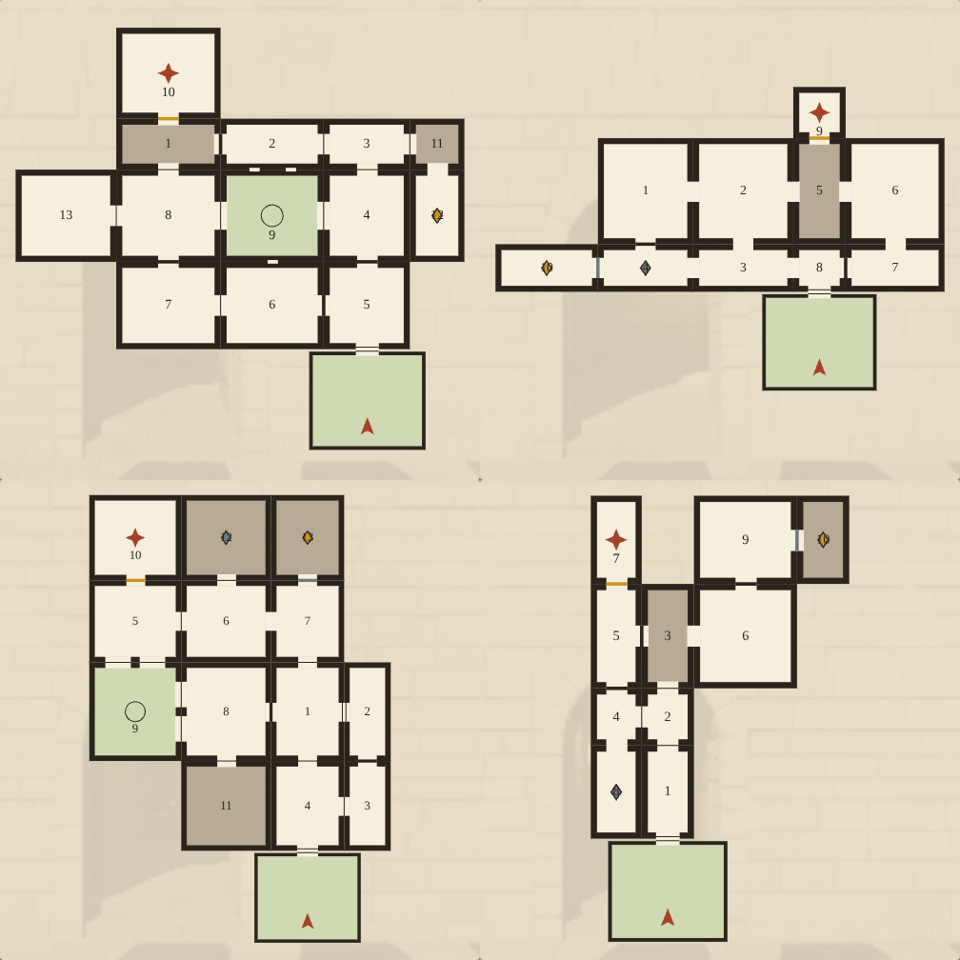
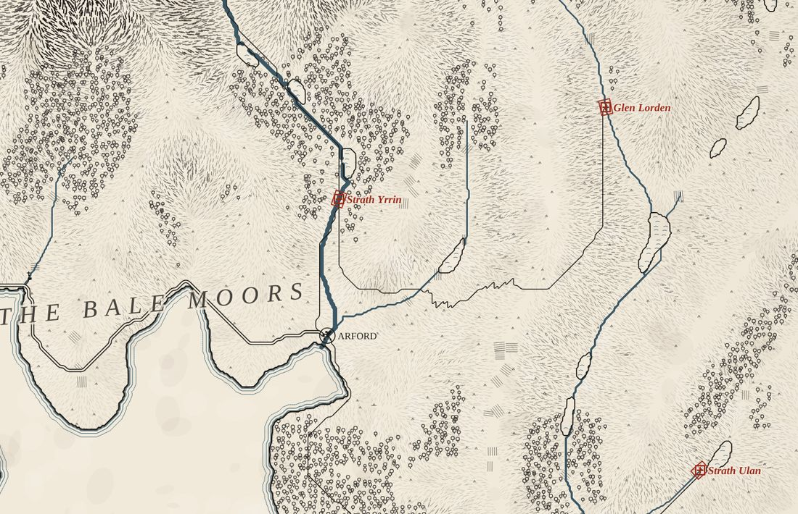

The big idea: decide first, then draw
Every place Dungeons makes starts as a plain written record, the site document: every room, every door and what locks it, every key and where it lies, the shape of the valley, each tree and building outside. Nothing in that record knows about triangles or pixels.
The program is split along that line. src/core decides what a place contains and writes it down; it draws nothing. src/render reads the document and builds the 3D world from it; it decides nothing. The plan, the ink map, the battle map and the exported files are made by reading the same document, so they always agree with it and with each other.
src/corethe recorddrawing: src/render, src/mapsplaying: src/appThere is no server. The page you open holds the whole program; the place is made on your own machine, in a few tens of seconds, and is gone when you close the tab. The address carries the seed, so a link brings back exactly the same place.
One seed, one place
Every choice the generator makes comes from a stream of pseudo-random numbers, and every stream comes from the seed. The seed is any text (?seed=ink-3 in the address); it is hashed into four 32-bit numbers that start a small, fast generator (src/core/rng.ts). The same text gives the same numbers on any machine, so the same place.
The catch with a single stream is that every choice shifts the ones after it. Add one new decision early on, say whether a valley has a charcoal burners' camp, and every later draw moves along by one: every place anyone has seen changes. So choices aren't drawn from one stream. They're drawn from forks.
fork(label) makes a new stream from the parent's seed and a label, such as ink-3/site/1/mission, without drawing anything from the parent. A choice added later, on a fork of its own (dashed), changes nothing that was already there.Rng.fork(label) so that adding a choice does not reshuffle existing sites. Names in a world follow it too: each is drawn from a stream keyed by what it names and where it is, to fifty metres, so a valley keeps its name whatever else the world gains or loses. And a world made in the browser is kept under a name that includes a hash of the code that made it, so a world made by older code is never read back.The house: rooms in loops
At the heart of every place is a walled house: in a valley the hall and keep of a castle, elsewhere a priory, abbey, charterhouse, hospice or preceptory; of limestone, sandstone, greystone or basalt; kept, damp or forsaken. Its plan is built from loops, not from a tree of rooms with loops added afterwards.
That follows Joris Dormans' cyclic generation, the approach behind the game Unexplored: a place is interesting when there are two ways between things, and the relationship between the two ways is the game. A locked door seen early, with its key round the long way; a door you can only open from the far side, which turns a long walk into a shortcut on the way back.
The house is laid on a grid of up to six columns by five rows, a metre-thick wall between cells. Passages are 3 to 3.6 metres across, rooms 5.6 to 7.6. One of four loop plans is chosen, sometimes round a cloister court open to the sky:

A draft is then filled in, each step from a stream of its own (draftSite in src/core/generate.ts):
- Rooms and ways. Some neighbouring cells merge into long halls. Rooms are joined by doors, or by wide arches where they open on a court. The first room is the gatehall; the sanctum is added beside the room furthest from it.
- Side chambers and secrets. Up to four dead ends are added, some through an antechamber to a strongroom, reliquary or oubliette. In about three houses in five, one chamber hides behind a stretch of wall that is really a door.
- Caves. In about one house in three a roomy dead end becomes a natural cave, and most caves run on through one to three more chambers by clefts in the rock, each 1.3 to 2.3 metres lower than the last, lit by a hole to the sky or by growths that glow.
- Roofs, uses and light. Rooms get a stone vault or a timber ceiling, and a use by their size: refectory, dormitory or chapter house for the large ones; kitchen, store, workshop or scriptorium for the rest. A castle's first great room is its chapel. A forsaken house has lost a roof. Some rooms are left dark, never two in a row.
- Floors and storeys. Floors rise and fall from room to room, never by more than three steps of 17 centimetres at a doorway. In about half the houses some rooms have a room above or a cellar below, reached by a stone stair of eighteen steps; a castle always has a dungeon under it.
- Locks and keys, and the proof that the house can be finished (next section).
Six drafts are made from six forks of the seed and each is scored: for loops, for how much longer the real route is than the straight one, for keys, bars, levers and secrets, for a court, a cave or a few dark rooms, and against straying from a target size picked for the place. Without that target, the comment in the code notes, "choosing the richest draft always chooses the largest". Only the winner is built.
Locks, keys, and the proof it can be finished
Once a draft has rooms, planMission (src/core/mission.ts) decides what stands in the way:
- The sanctum's door takes a gold key. The key goes where the walk from the start plus the walk on to the sanctum is longest, preferring dead ends and dark rooms.
- In about half the houses the gold key's room is locked too, with an iron key hidden somewhere else.
- A shortcut. About a third of houses have a door out of the gatehall that can only be opened from beyond: a portcullis with its lever on the far side, or a door barred on the other side. It's only placed on a loop, so everything can still be reached the long way round.
- Secrets never hold anything needed. While planning, a secret door counts as locked, so nothing on the way to the end can lie behind one.
Then solve plays the house. It is a breadth-first search over every state the player could be in: which room they're in, which keys they hold, which bars they've lifted and which levers they've thrown. It looks for the shortest sequence of moves that reaches the sanctum. If there is none, the draft is thrown away with the reason "cannot be completed".
The route the solver finds also goes into the exported document. And tools/browser/play.cjs checks the proof against the real program: it walks the player's body through every doorway in both directions, then follows the solver's route to the chest in the sanctum.
Four kinds of place
The same house, from the same seed, can stand in four kinds of setting. The setting is laid out after the house, each by a function of its own (layOutValley, layOutIsland, layOutMountain, layOutHarbourTown), and everything it puts down goes into the document too.
A valley head
You arrive at the foot of a valley, in a forest, and walk up past walled fields and a pasture with sheep, through a village on the slope under it, with a cross street, a small stone church in its churchyard and sheds in its yards, to a castle on the high ground over the valley's head, at the brow where the land falls away to the stream: a curtain wall with its gate between two towers, a tower or two more at the back, and inside it the house as the castle's hall and keep. Two or three of standing stones, a pond with a landing stage and a ruin lie along the way, and perhaps a mill, a charcoal burners' camp or a mine. (?settle= still asks for a hamlet, a manor or a street of brick houses.)
?place=islandAn island
The house on high ground over sea cliffs. You arrive at a cove with a jetty, below a fishing hamlet, with a lighthouse whose stair you can climb and now and then a castle; the mainland lies across the water.
?place=mountainA mountain top
The house as a hospice in a saddle under the summit, above a sea of cloud. You come up a ridge out of the cloud, and a path winds on up to the summit's cairn. Summer or winter, even odds.
?place=townA harbour town
The house on a terrace at the head of the market square. You arrive at the harbour, with its quay, moles and light; streets of classical, timber-framed and wooden houses, shacks and red storehouses along the shore, then fields, woods and an outlook on the headland.
Every setting is placed in land, not drawn round the house. In a world (the default, next section), the land is the world's own. With ?world=none, a place gets a small country of its own instead, made by noise and worn by water and frost, and is searched for in it: a valley head among the glens of an upland (highlands.ts), an island in a sea full of islands (archipelago.ts), a harbour on a coast (coastland.ts). Only a mountain top on its own is still the other way round, its top drawn first and its country made about it. Either way, only what the game needs is then cut, built or added.
The world: a country made the way land is made
Every place now stands in a world: one stretch of country six kilometres east to west and ten from the sea to the hills, made from a seed of its own (w2 unless another is asked for). The sea and its islands lie to the south, then a coast with a great bay, low country of fields and woods, an upland of fells and glens, and a range of mountains to the north.
Only the broad plan is decided by rule (planWorld in src/core/world.ts): which way is inland, how broad each zone is, and where the bay comes in. Nothing else is placed: no peak, no island, no valley. Those come out of how the land is made.
Lifted, and worn by its rivers
The land is made as real land is: pushed up slowly, and cut down by rivers. On a lattice of points 24 metres apart (251 by 417 of them), each step of the simulation does three things (liftAndErode in src/core/terrain.ts):
- Lift. Every point rises at the rate its zone sets: 0.6 to 1.6 millimetres a year under the range, more in some stretches, and about 0.07 in the low country.
- Find where the water goes. Each point drains to a neighbour downhill, chosen afresh each step and the steeper the likelier, so rivers don't all run along the lattice's eight directions.
- Cut. Where at least two and a half hectares drain through a point, a river wears it down in proportion to the water passing and the fall to the next point (the stream power law). Above that, the hillside only creeps.
That repeats in steps of fifty thousand years over some seven million years, solved from the river mouths upward as Braun and Willett showed, so a long step is still stable. Then the heights are scaled so the highest few points stand at 650 metres, the mountains alone are raised until the highest summit reaches 800, and ridged noise gives the high ground sharper crests. Finally the sea comes up over the shelf: valleys drown into inlets, spurs become headlands, and hills become islands.
After that, finer work: detail and wear by water drops and frost on a lattice of 8 metres (751 by 1,251 points); hollows filled until they spill, deep ones kept as lochs and shallow ones breached by an outlet; rivers drawn from where forty hectares drain; and cover worked out for every point from its height, slope, wetness and zone: sea, lake, shore, marsh, fields, pasture, forest, heath, rock or snow. Towns, roads, tracks, paths and ferries are laid over the land the way a walker or a cart would go, round a hill rather than over it. Every name, from the sea to each place, comes from a random stream keyed by what it names and where, so a place keeps its name whatever else changes.


w2, the Country of Aror, as the world page draws it from today's code: its ink map, and the same land as shaded relief coloured by cover. Made in 22 seconds in a headless browser, with 2 islands, 4 valley heads, 3 mountain tops and 4 coastal towns found in it.Found, not drawn
Places of adventure are never planted in a world. They are looked for in the land as it came out, up to four of each kind, and if the land only holds two islands, the world has two islands.
Each search asks the land for ground a house can stand on and a way to reach it, not for a particular shape:
| Kind | Where it is looked for | What it must have |
|---|---|---|
| Island | The world's own lattice, in the sea | Land apart from the mainland, 6 to 25 hectares; the house where its ground fits best, well in from the cliffs, facing a landing gentle enough to walk up |
| Valley head | Tiles of the upland, by the valleys' own search | A glen whose head can take the house without moving more than three metres of earth on average; none within 700 metres of another |
| Mountain top | The world's lattice, in the range | A summit standing alone over the cloud, 180 metres or more above the valleys a kilometre off, with a ridge a way could come up, and a shoulder on it for the hospice |
| Coastal town | The mainland's shore, by the town's own search | Open water before a quay, low ground rising gently behind for a square and streets, better still in a bay; 900 metres from the next |
Fitting the house's ground to the land
Real ground is never quite flat, so the house's ground, 46 metres across by 62 deep, is fitted to whatever was found (src/core/fit.ts). Where the land is near level it is made level. Where it slopes it is cut into one, two or three terraces, each at the middle height of the land beneath it, which moves the least earth, and none more than three metres above the next. Around the edge the land is eased back to its own shape over a bank half again as broad as it is high, so nothing is left standing as a cliff.
The world finds each place and fits its ground; the place itself (its house, rooms, caves and what stands about it) is still made from its own seed, the house's seed formed from the world's seed and the place's kind and number. So the same place is the same house however you arrive at it. When a draft of the house won't go on the land (an island's cove won't fit, say), the next draft of the same seed is tried, and if none will, the page says why rather than quietly putting it somewhere else.

From document to stones
The mesher (src/render/siteMesher.ts) reads the document and makes geometry from it. It decides nothing about the place: where the house is, what each room holds and what stands in the valley are already written down. It decides only how each thing is shaped.
Each place gets a floor, four walls with holes cut for its ways, and a roof of its kind: a stone barrel vault, boards on beams, open sky, or no roof at all because it is a cave in the rock. Each way gets dressed stone round its opening, a threshold, and steps where the floors on either side differ.
Stone by stone
Walls are not flat panels with a stone picture on them. Every block is its own piece of geometry (geom/masonry.ts): a face that stands slightly proud, a bevelled edge, and a recessed strip of mortar. In ashlar, courses are 26 to 38 centimetres high and blocks 0.5 to 1.05 metres long, with joints of 7 millimetres, mortar set back 14, and one corner in seven chipped. A stone is about forty points.
Every stone and every timber is a closed solid, with no face left open on top or underneath. Leaving out the faces "the player can't see" was tried, and was wrong twice: a gap always shows somewhere, from some angle, or lets light through. Behind the visible skin, the mesher also records the solid mass of each wall and roof, which the light bake and the sun's shadow both use.
Rock, carved from a function
Rock is made the other way round. A function says, for any point in space, whether it is inside rock or out, and how far (geom/rockForms.ts): beds of stone of a given thickness, joints across them, a cliff's face moved sideways so that beds can overhang, boulders as blocks bounded by planes with their corners knocked off, and the slow wear of frost and gravity leaving scree at the foot. Each stone has its own character; limestone lies in beds of 0.8 metres with joints 2.1 apart, basalt in beds of 3.2 with joints only 0.85 apart.
A carver then turns that function into triangles (geom/rock.ts), and there are two:
- Marching cubes for caves and the house's chambers, in cells of 0.28 metres. It is smooth, never leaves a hole, and suits rock worn by water.
- An edge-keeping carver (dual contouring) for rock in the open: each cell gets one point, put where the surfaces through it come closest to meeting, so a split face keeps a sharp edge instead of being rounded off. Rock in a valley is carved this way, in cells of 0.3 metres.
Buildings
Buildings standing free in a valley or a town are made of plain solids rather than masonry, one function to each style (render/buildings.ts): timber-framed, classical, and classical in wood. Brick buildings in the manner of the Baltic towns (render/brick.ts) build their fronts as flat figures, gable outlines, niches and arched openings, made solid in layers, so a niche is really sunk and a portal really steps back. Canal houses are built with the same tools, then their fronts leaned out over the street by up to three centimetres for every metre of height, as the real ones are. Houses that can be entered are planned inside as well (src/core/interior.ts), with rooms, floors on beams, whitewash and a steep stair, and their glass is clear both ways.
Edges that would be dead square are rounded in the shading by a centimetre or two (two for dressed stone, 1.2 for timber, 3 for split rock), and where a corner shows against the sky a real bevel is built instead.
What grows where
Nothing is scattered at random. Over the walked ground the mesher keeps four numbers for every point, each from 0 to 1: how shaded it is, how wet, how worn by feet, and how thin its soil is. Plants are placed by rules over those numbers.
| What | Grows where |
|---|---|
| Grass | Everywhere it can, its height 0.45 + 1.1 × wet, cut down by wear, shade and thin soil: long where nobody walks |
| Ferns | In shade above 0.45, where shade and wet together pass 0.85 |
| Tall herbs | In the open (shade under 0.3) on damp ground (wet over 0.5) |
| Thicket and bushes | At the edge of the wood, shade between 0.18 and 0.5 |
| Reeds | From 30 centimetres above a waterline to 60 below it |
| Nettles | About a ruin |
Trees are grown, not placed as models (render/planting.ts): oaks and ashes branch up to four levels deep, with lobed and fluted trunks; spruces and pines carry brushes of needles. About one tree in six is old, one in twenty a giant, and three in ten young. The ground itself is drawn by one material that reads the same numbers, so bare ground shows as beaten earth, bare wet ground as shingle, ground under trees as leaf litter, and the track as two ruts a stride apart and a hand deep.
Less detail further off
A valley holds 280,000 to 340,000 vegetation cards, so how much of each is drawn depends on how far off it is:
Everything that grows sways in the wind, worked out on the graphics card for each point of each card: grass a little, leaves less, with a tremble of their own on the near sprigs. Light that passes a leaf's shadow comes through it, so a crown against the sun glows.
Light, air and one renderer
The picture is drawn with three.js's WebGPU renderer, which falls back to WebGL 2 by itself where a browser has no WebGPU. So nothing is written twice: every material and every step after the scene is drawn is a node graph in three's shading language (TSL), which the renderer turns into whichever shader language it needs.
The one exception is the textures. Seventeen recipes (stone, wood, moss, rock, ground, scree, four barks, soil, litter, plaster, thatch, tile and two bricks, and sand, brick or talus where a place needs them) are short GLSL programs, painted once at start by a small WebGL renderer of their own (render/textures.ts). Each gives three pictures, colour with height, a normal map, and roughness with occlusion, which are read back and the painter thrown away.
Baked light
Once a place is built nothing in it moves, so the light that bounces about inside the house can be worked out once and kept: the bake (render/bake/). Direct sunlight and torchlight are drawn live, with shadows; the bake adds everything else, the light of the sky and what bounces off walls and floors.
The bake runs in web workers, as many as the machine has cores less one (up to twelve), each holding the house in a tree of bounding boxes (three-mesh-bvh) to make ray tests quick. Only the face points of each stone are traced, which made it about seven times faster (230 seconds to 33 on the test scene). The picture is shown at once and the light fills in as passes finish. What stands outside the house is not baked: it is lit by the sky, and by light thrown up from sunlit ground.
Sun shadows come from a fine map, 2,048 points square, that follows the walker over 128 metres, about six centimetres to a point, drawn afresh when the walker has gone a fifth of the way to its edge; beyond it a coarser map covers the whole place. The four nearest torches cast shadows too.
The air, and the rest of a frame
render/post.ts. Still water adds a second drawing of the scene, mirrored, at most 384, 512 or 1,080 pixels high depending on the level of detail.- Mist and haze. Near the eye, out to 45 metres, the air is stepped through in 40 steps so that mist lies in hollows and glows towards a low sun; beyond, haze is worked out in one go, thinning with height.
- Clouds are real volumes the eye looks through, heaped from about 800 metres up and 700 to 2,100 metres deep, or lying in flat banks, with cirrus at seven kilometres. They cast soft shadows and shafts of light.
- Smoothing over frames. Each frame is drawn a fraction of a point aside from the last, over 32 positions, and the frames are blended. That smooths the edges of leaves and fine lines, and averages away the noise of the clouds and mist.
- Hollows are darkened from the picture's own depth (ambient occlusion at half size, two metres about each point), which settles grass, trees and walls onto the ground.
- Exposure follows the picture a frame or two late, as an eye adjusts, and a film-like curve (ACES) brings bright light into range.
Six hours (morning, midday, evening, sunset, dusk and night) and four seasons are dealt by the seed; one valley or town in five gets winter, with low sun, snow lying, bare broadleaves and frozen ponds. Lamps and windows light up from sunset.
| Level of detail | Textures | Bake rays | Grass to | Leaves | Clouds | Occlusion |
|---|---|---|---|---|---|---|
| Low | 512 px | 12 | 40 m | half | painted | off |
| Medium (touch devices) | 1,024 px | 16 | 55 m | ¾ | 16 steps | on |
| High | 1,024 px | 32 | 80 m | all | 28 steps | on |
| Ultra | 2,048 px | 32 | 80 m | all | 28 steps | on |
From a link to a walk
Making a place takes tens of seconds, nearly all of it in the browser's one main thread. A page that holds that thread for long gets a "page unresponsive" prompt, so the build is cut into small steps, and between steps the loader (src/app/loader.ts) hands control back to the browser at least every 40 milliseconds to paint the progress bar.
The steps are what you see on the loading screen, in this order (src/app/main.ts):
- Lifting the land, and letting the rivers wear it. If the place is in a world, the world is started first, in a web worker, so it is made while everything else goes on. A world once made, and its tiles, are kept in the browser for next time (the last three worlds).
- Starting the renderer. WebGPU, or WebGL 2 where there is none.
- Painting surfaces. One texture recipe at a time: dressed stone, timber, moss, rock, turf, scree, the barks, soil, litter, plaster, thatch, tiles, the bricks.
- Designing the valley and its house (or the island, the mountain, the town): rooms, doors, locks and keys. This is the generator, from section 3, and it waits for the world if it isn't ready yet.
- Surveying the ground, tracing the caves, carving the valley, laying stone. The mesher is written as a generator function (
meshSiteSteps) that pauses after each place, so the page breathes between rooms: "Laying stone: place 4 of 11". - Shaping the stone into meshes; planting grass, leaves and flowers; filling the water.
- Preparing collision. Everything solid is merged into one mesh, and an index of bounding boxes is built over it (
three-mesh-bvh) so the body can be kept out of the walls quickly. - Painting the sky; baking the light; compiling shaders. The bake starts in its workers here, and is not waited for. "The first picture takes a moment."
- Ready. You can walk at once, while the bake refines: the picture settles into its final light as passes finish.
DBG_T=1 says where the time goesThe body and the rules
You walk as a body, not a floating camera (src/app/player.ts): a capsule 1.8 metres tall and 0.28 in radius, eyes at 1.68, that falls under gravity, slides along whatever it touches and climbs steps up to 34 centimetres. It walks at 3.2 metres a second and runs at 6.5. Each frame it is tested against the one merged mesh of the place, through its index of boxes; shut doors are boxes of their own, taken away as they open. V lets go of all that and flies.
There are no buttons to press. Everything is done by walking (src/app/game.ts): coming up to a door tries it, walking up to a key takes it, and reaching the chest in the sanctum ends the run.
| You walk up to | What happens |
|---|---|
| A shut door | It swings open |
| A locked door without its key | "Locked. The plate on it is gold; it wants a key to match." |
| A barred door, from the wrong side | "Something bars it from the other side." From the right side: "You lift the bar. The door swings free." |
| A portcullis | It stays down; you need its lever. At the lever: "Iron grinds, and the portcullis rises." |
| A stretch of wall that is a secret door | "The wall gives under your hand. A door, faced in stone." |
| A key | You take it |
| The chest in the sanctum | The end |
The map fills in as you explore. Rooms you have entered are drawn in full; rooms you have only seen through an open door, an arch or a window are sketched; the rest is left off, and a secret door stays hidden until it opens. M enlarges it, and in a world, pressed again, shows the world's ink map about the place with you on it.
Sound is made, not recorded: wind, leaves, the tone of a room, footsteps that change with what you walk on (grass, earth, stone, wood, water), and the sounds of doors, keys, the lever and the end, all from noise and oscillators (src/app/sound.ts). Its levels were set by measuring the output in a headless browser. Its author has never heard it.
Torches light the rooms with real lights, and four lights that cast shadows are moved among whichever torches are nearest. L raises the light you carry. On a touch screen, a thumb stick appears wherever the left of the screen is touched; drag on the right to look.
The land at a metre, and the world as the game
Today the game builds one place at a time, whole, and you go from one to another by loading a page. The direction is for the world itself to become the game: walk out of a valley, along a road, and into the next place. That needs the world's land at walking detail, a metre between points, and 6 × 10 kilometres at a metre is sixty million points, far too much to make at once.
So the land is made in squares, 256 metres on a side, only where they are wanted, nearest first, in web workers (src/core/stream.ts). A square is the world's 5-metre tiles under it, with finer knolls and hollows laid on and a light wear by water and frost at a metre, faded out towards the square's edge. Along its edge a square is a plain function of where each point lies, which its neighbour shares, so the two meet exactly. A square takes about 0.4 seconds.
Each square is then meshed only as finely as its distance calls for (src/render/streamMesh.ts): cut into right triangles that are split only where the ground departs from them by more than a tolerance, as Mapbox's Martini does it. Near squares are true to two centimetres; a kilometre off, to 1.6 metres. A skirt hangs from every square's edge to hide the slit where neighbours of different detail meet. Drag the walker below to see the rule at work.
Ways between places
A way from a town's quay to a valley head is laid as the world's tracks are, round hills and along slopes, its points smoothed four metres apart (src/core/route.ts). Its bed is then graded and cut into the squares (src/core/way.ts): level for 2.4 metres either side of the middle, a shoulder, and a bank back out to the land, half again as broad as it is high. Like the squares' edges, the bed is a function of where a point lies alone, so every square it passes through cuts it the same and they still meet exactly. The ground's material draws it as a cart track with ruts and grass along the verges. The route page walks one: in world w0, 0.93 kilometres from Halhaven's quay to the house at Strath Norith.
The world as the game, in six steps
| Step | What it means | Where it stands |
|---|---|---|
| 1. The game's body in the world | The walk and route pages move the game's own body over the streamed land, stopped by tree trunks and the sea | Done. Walked from Halhaven to Strath Norith in 141 seconds, never more than 6 cm under the ground |
| 2. Places built into the world | Within 1.5 km, a place is laid out and built in a worker and set into the land, the squares about it brought to meet its edge | Done for valley heads. Islands, towns and mountain tops bring a sea, a coast or cloud the walk doesn't draw yet |
| 3. One renderer | The game's sky, clouds, sea, occlusion, lamps and night used by the world as by a place | Not yet |
| 4. The game in the world | Each place's locks, keys and goal; the maps; sound; ways joining every place, a boat for the sea | Not yet |
| 5. The world's own light, water and rock | Sky light for the land between places; lakes and rivers; crags carved near the walker | Not yet |
| 6. The world the default | The game's page opens on the world; single places stay for making and checking them | Not yet |
Maps and exports
Because everything is in the document, a place can leave the tool in forms another game or a tabletop referee can use. Export in the game saves them, each named for the seed:
| File | What it is | Made from |
|---|---|---|
<seed>.json | The site document: every place, every way, what locks it and what opens it, and the solver's route through | The document itself (format: "dungeons-site", version 2) |
<seed>.glb | The built world as a glTF model, every stone, with its materials; about 50 MB for ten rooms, without the baked light | The meshes |
<seed>-plan.png | The plan, with a key to the rooms | The document |
<seed>-map.png | The plan drawn in ink as a referee's map, with hatched walls and numbered rooms, and a second sheet of the whole valley, island or mountain top in hachures | The document |
<seed>-battlemap.jpg | The built world from straight above with the roofs cut away, ruled in squares of 1.5 metres | The 3D world, drawn twice from above (cut at head height indoors, whole outdoors) and merged |
A game that wants its own look can ignore the model and build from the document; one that wants the tool's stonework can load the model and use the document to know what it is looking at. The example viewer does the second: it loads both and shows the building cut open with its rooms named. The world page draws a world's ink map the same way, in the hand of a place's own, with its places of adventure in red; the gallery shows a dozen candidate places at a time as plans; and the range report measures 2,000 generated places to show what the generator does and doesn't make.
How it is checked
A generator is only as good as the worst thing it can make, and nobody can look at every seed. So most checks build hundreds of places without a browser and test each one for what must never happen; others drive the real program, with the player's own body, in a headless browser.
Sites
Generates hundreds of places of every kind and confirms each is connected and can be finished, that no building stands on the track or in another, that no two dark rooms come in a row, and that no doorway rises more than 52 cm.
Land and rock
Builds each kind's land, rock, buildings and planting for a dozen seeds and reports rock standing in the house's doorway, numbers that are not numbers, build time and triangles.
Houses
Builds canal houses and houses of brick, each alone, and walks the game's body through each: up the stoop, in at the door, up every flight to the top.
The world
Builds worlds and reports what was found and why the rest was turned down; makes squares at a metre and checks that every shared edge matches exactly, with ways cut in.
Walking the world
Walks the body along a way end to end and through a wood, then from a town into a valley built into the world, measuring how far it ever stood under or over the ground.
In the browser
Walks every doorway both ways and plays to the end; drives the body at the valley's edges from 36 directions to see if anyone gets out or falls through; climbs the lighthouse; walks out along the jetty.
npm run typecheck and npm run build must pass before every commit, and every push to the default branch is built by a workflow and published to GitHub Pages, this page with it.
What it doesn't do yet
The design (document 2) reaches further than what is built. The honest gaps, as of November 2026:
| Not yet | What there is instead |
|---|---|
| A premise and a history for each place: who built it, what happened to it, who is there now | A setting: stone, hour, season, weather, the kind of house and whether it is kept, damp or forsaken |
| Loop patterns as a general grammar, biomes as data, zones within a site | Four fixed loop plans, filled in and scored |
| Rooms of any shape | Every room is a rectangle; caves are irregular hollows inside one |
| Furniture recorded in the document | Furniture is chosen when the place is built, from each room's use, the one exception to "everything is decided in src/core" |
| Furnished brick and canal houses; the sea cave in an island's mission | Their rooms are built, and empty; the sea cave can be explored but holds nothing needed |
| Stairs up to the castle's wall-walk, a chapel that shows as one from outside, a dungeon furnished as one | The curtain wall, gate, towers and a keep taller than them, on the land's own wooded high ground over the valley, its village set into the slope under it; the chapel and the dungeon are rooms of the house |
| Sound that has been listened to | Levels measured in a headless browser |
| Frames timed everywhere | Valleys and towns timed on a desktop graphics card; an island only seen running at the browser's cap in one person's browser; the WebGL 2 fallback not timed; an iPad not tried since the cliffs, trees, clouds and water went in |
| The world as the game | Steps 1 and 2 of 6 (section 13); places are still entered one page at a time |
Within those limits there's a lot to walk. The best way to see how it works is to open the tool, press V and fly up over the place you were given, or open the world page and pick one.